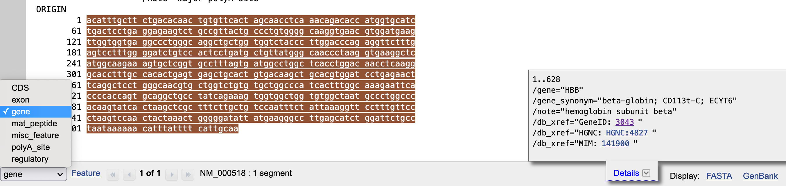
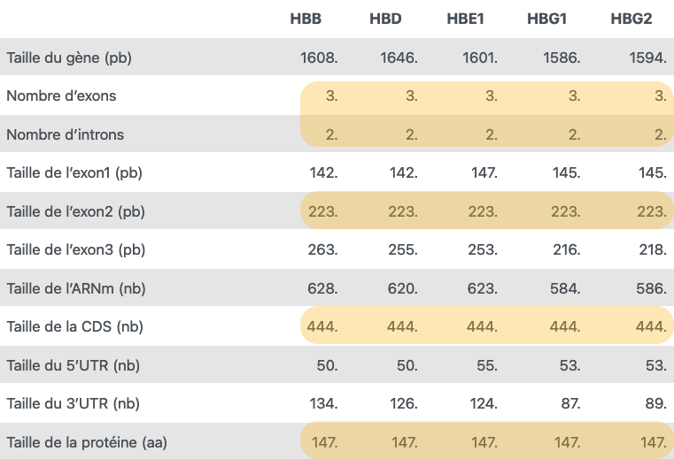
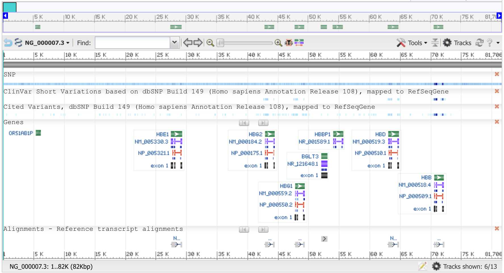
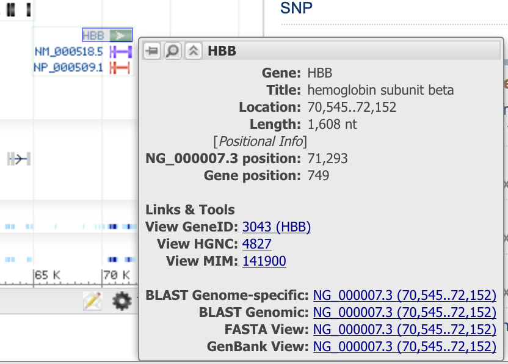

Réponses et solutions du TP1
1 Réponses et solutions du TP1
1.1 Réponses aux questions de la partie 1.3
Le moteur de recherche du NCBI se comporte comme tous les moteurs de rechercher tels que Google. Plus la recherche est ciblée, plus la réponse est pertinente.
Il donne les résultats trouvés dans chacune des bases de données stockées au NCBI classées en 7 catégories (Genes, Proteins, Genomes, Clinical, BLAST, PubChem et Literature databases).
1.2 Réponses aux questions de la partie 1.4
Les réponses se trouvent toutes dans le fichier NG_000007 dans la liste des Features
Informations générales
Il s’agit d’une séquence génomique humaine (dans les champs DEFINITION et ORGANISM)
Son numéro d’identification dans la base de données RefSeq est NG_000007 et son numéro de version 3 (inscrit .3)
La date de la dernière mise à jour de cette séquence est le 14/02/2003
La date de dernière mise à jour s’obtient en demandant l’affichage des révisions en cliquant sur le mot GenBank en haut à gauche de la pageBibliographie
8 articles sont référencés (champs JOURNAL) On y accède en cliquant sur les liens hypertext PUBMEDChromosome
Longueur en base 81706 (dans le champ LOCUS, mais plein d’autres également), le plus logique est REFSEQ_SPAN qui indique 1-81706 (les positions de début et de fin de séquence) Cette séquence est sur le chromosome 11 (champ FEATURES source /chromosome=) Sa position sur le chromosome est donnée par le champ FEATURES source /map= (11p15.5) soit chromosome 11 bras court (p) bande 15.5Ceci peut être visualisé sur le site NCBI en affichant le chromosome 11 humain à partir du site Datasets du NCBI
Gène
8 gènes sont listés dans la fiche (on compte le nombre de mots gene)
5 ARNm sont listés. On compte le nombre de mots mRNA. La différence provient du fait qu’il existe des traces d’anciens gènes devenus inactifs : les pseudogènes. Leur séquence est toujours présente dans le génôme, mais il n’y a plus d’ARNm ni de protéine associés.
On ne peut pas avoir les tailles directement dans la page, il faut donc les calculer.
1.3 Réponses aux questions de la partie 1.5
La taille (en nombre de nucléotides) du gène HBB est obtenue en faisant la soustraction des positions de fin et de début du gène indiqués dans gene /gene=“HBB”
On lit 70545..72152, mais les deux valeurs sont à inclure, donc
Le calcul a faire est 72152 - 70545 + 1 = 1608 pbLa taille de l’ARNm est obtenue en faisant les 3 soustractions des positions de fin et de début des 3 exons indiqués à la ligne mRNA join(70545..70686,70817..71039,71890..72152)
Soit (70686 - 70545) + (71039-70817) + (72152-71890) +3 = 628 pbIl faut procéder de même avec la CDS pour obtenir sa taille
Soit (70686-70595) + (71039 - 70817) + (72018 - 71890) +3 = 444 pbOn compte 3 segments comme vu au-desus, donc 3 introns, séparés par 2 , dans la commande join donc 2 introns
Les tailles des segments 5’UTR et 3’UTR s’obtiennent en comparant les positions de début et les positions de fin de deux séquences ayant ou pas les UTRs
Donc pour le 5’UTR 70595 (mRNA) - 70545 (CDS) = 50 pb
et pour le 3’UTR 72152 (mRNA) - 72018 (CDS) = 134 pb
Attention
Pas de +1 pour cette soustraction car on soustrait les positions de 2 molécules différentes.
Une autre façon de calculer est de considérer que la fin du 5’UTR est en fait le nucléotide avant la position de départ de la CDS, soit le nucléotide (70545-1).
Dans ce cas le calcul devient :
70595 - (70545-1) +1 = 50 pb
On peut délimiter les segments dans la séquence en trouvant les positions correspondantes. Pour cela utilisez les outils de déplacements et de sélection situés au bas de la fenêtre

Chaque bloc comprend 10 nucléotides. Pour trouver les emplacement des codons d’initiation et de terminaison, on se positionne dans la séquence sur le premier et le dernier nucléotide de la CDS et on lit 2 nucléotides en aval pour l’ATG et deux en amont pour le codon STOP (TAA). La TATA box est trouvée en amont de l’ARNm en position 70514 à 70518La taille de la protéine est obtenue en divisant la taille de la CDS par 3 et en retirant le codon STOP qui est inclu dans la définition de la séquence CDS
soit 444 / 3 - 1 = 147 acides aminés
1.4 Réponses aux questions de la partie 1.6

On remarque que bien que produisant tous la même longueur de séquence d’ARNm et de protéine, les gènes sont très différents les uns des autres. Ils n’ont pas la même longueur totale ni les mêmes exons bien qu’ils soient tous de la même structure : 3 exons et 2 introns.
Leurs régions non-traduites sont également différentes.
1.5 Réponses aux questions de la partie 1.7

Les numéros d’accès sont inscrits devant chaque icône et laisser la souris sur une icône déplie une boite d’information contenant notamment les calculs de taille
Attention
Les dernières modifications de l’enregistrement ont introduit un bug d’affichage qui ne permet plus de visualiser les exons de HBB comme indiqué sur cette ancienne copie d’écran

Illustration dans le cas de HBB : Length: 1,608 nt